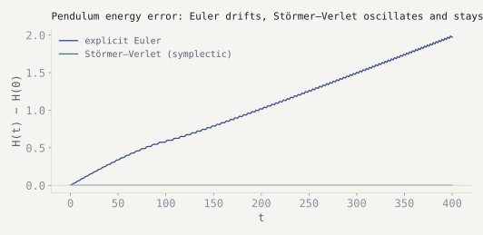

Follow-up to the previous note. Explicit Euler on a pendulum leaks energy steadily. Switching to a symplectic method — here, Störmer–Verlet (leapfrog) — doesn't make the energy error zero. It does something more useful: it makes the error bounded, oscillating around the true value forever instead of drifting away from it.
The scheme
For separable \(H(q,p) = \tfrac12 p^2 + V(q)\), Störmer–Verlet alternates half-step momentum kicks with full-step position drifts:
Störmer–Verlet / leapfrog, kick–drift–kick form
Each of those three sub-steps is itself the exact flow of a simpler Hamiltonian (pure kinetic or pure potential), and each is a canonical (area-preserving) map. Composing canonical maps gives a canonical map, so the whole step is symplectic exactly — a discrete analogue of the argument in the previous note, not an approximation to it.
Why the energy error stays bounded
The key fact, from backward error analysis, is that a symplectic integrator applied to \(H\) is exactly solving the flow of a nearby modified Hamiltonian,
the shadow Hamiltonian the symplectic method integrates exactly
for a specific, computable series of correction terms \(H_i\). Because the numerical map is symplectic, \(\tilde H\) is itself conserved by the discrete flow to all orders in the (typically asymptotic, not convergent) series — so the true \(H\) can only ever wander within \(O(\Delta t^p)\) of \(\tilde H\), for a method of order \(p\). The error has nowhere to accumulate; it oscillates in a thin band. Explicit Euler isn't symplectic, so no such shadow Hamiltonian is conserved, and nothing stops the error from growing linearly with time.

Implementation
import numpy as np
def stormer_verlet(q, p, dt, n_steps, dVdq=np.sin):
qs, ps = [q], [p]
for _ in range(n_steps):
p_half = p - 0.5 * dt * dVdq(q)
q = q + dt * p_half
p = p_half - 0.5 * dt * dVdq(q)
qs.append(q); ps.append(p)
return np.array(qs), np.array(ps)
# V(q) = -cos(q) => V'(q) = sin(q)
q, p = stormer_verlet(q=2.0, p=0.0, dt=0.01, n_steps=40000)References
- E. Hairer, C. Lubich, G. Wanner, Geometric Numerical Integration: Structure-Preserving Algorithms for Ordinary Differential Equations, 2nd ed., Springer, 2006. Ch. IX (backward error analysis).
- B. Leimkuhler, S. Reich, Simulating Hamiltonian Dynamics, Cambridge University Press, 2004.
- J. M. Sanz-Serna, M. P. Calvo, Numerical Hamiltonian Problems, Chapman & Hall, 1994.